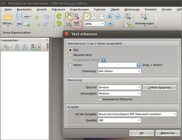

PDF-XChange Editor
Dieser Artikel wurde für die folgenden Ubuntu-Versionen getestet:
Ubuntu 16.04 Xenial Xerus
Ubuntu 14.04 Trusty Tahr
Zum Verständnis dieses Artikels sind folgende Seiten hilfreich:
Dieser Artikel beschreibt die Installation und Benutzung des kostenlosen Windows-Programms PDF-XChange Editor  . Der Nachfolger des PDF-XChange Viewer enthält nicht nur sämtliche Funktionen des Vorgängers (inkl. dem Hinzufügen einer Textebene via OCR), sondern bietet nun die zusätzliche Möglichkeit, bestehende PDF-Dokumente zu überarbeiten.
. Der Nachfolger des PDF-XChange Viewer enthält nicht nur sämtliche Funktionen des Vorgängers (inkl. dem Hinzufügen einer Textebene via OCR), sondern bietet nun die zusätzliche Möglichkeit, bestehende PDF-Dokumente zu überarbeiten.
Somit ist PDF-XChange Editor ein vollständiger PDF-Editor. Mit ihm lassen sich zum Beispiel problemlos Texte ändern und korrigieren, hinzufügen oder komplett löschen. Auch Grafiken lassen sich mühelos verschieben, vergrößern, verkleinern und löschen. Die erzeugten Dateien bleiben dabei mit anderen PDF-Betrachtern kompatibel. Die Testversion kann kostenfrei verwendet werden. Die Lizenzbedingungen gestatten den Einsatz für private und kommerzielle Nutzung.
Alternativen sind die Programme Master PDF Editor und Xournal (beides native Linux-Programme).
Voraussetzungen¶
Da es sich beim PDF-XChange Editor um ein Windows-Programm handelt, kann dieses nur mit Hilfe von Wine unter Linux installiert und genutzt werden. Für eine erfolgreiche Installation ist die richtige Kombination aus Wine-Version und Version des Editors sehr wichtig. Die am besten passende Wine-Version zur aktuellen Version des PDF-XChange Editors findet man in der Wine Application Database (AppDB), gekennzeichnet mit dem Status "Plantinum". Aktuell ist dies die Wine-Version 1.8.3 (Stand: 09/2016).
Zur Installation können auch die Alternativen PlayOnLinux oder die kommerzielle Wine-Variante CrossOver genutzt werden. Mit diesen ist das Einrichten verschiedener Wine-Versionen besonders komfortabel.
Installation¶
Zunächst lädt man sich die ausführbare .msi-Datei als 32-bit-Version über die Produktseite  herunter und vergewissert sich, dass die installierte Wine-Version zur aktuellen Programmversion passt (siehe Voraussetzungen).
herunter und vergewissert sich, dass die installierte Wine-Version zur aktuellen Programmversion passt (siehe Voraussetzungen).
Bei der Installation via PlayOnLinux können andere Wine-Versionen über die Wine-Version-Verwaltung einfach nachinstalliert werden.
via Wine installieren¶
Mit Rechtsklick  auf die Installations-Datei "-> Mit Wine Windows-Programmstarter öffnen..." [1] gelangt man sofort zum Installationsdialog.
auf die Installations-Datei "-> Mit Wine Windows-Programmstarter öffnen..." [1] gelangt man sofort zum Installationsdialog.
Eventuell muss die heruntergeladene Datei erst ausführbar gemacht werden.
via PlayOnLinux installieren¶
Für den PDF-XChange Editor bringt PlayOnLinux kein eigenes Installationsskript mit, weshalb die heruntergeladene Installations-Datei über die Manuelle-Installation aufgerufen werden muss.
Zuvor hat man über die Wine-Version-Verwaltung ("-> Werkzeuge -> Wine-Versionen verwalten") die Möglichkeit die am besten passende Wine-Version nach zu installieren.
Der PlayOnLinux Assistent führt einen durch die Vorbereitung der Installation. Nach "Installiere ein Programm in einem neuen virtuellen Laufwerk" und der Vergabe eines Namens für die Installation, wählt man "Benutze eine andere Version von Wine" und hat nun die Möglichkeit, die über die Wine-Version-Verwaltung installierte, genau für den PDF-XChange Editor passende, Wine-Version auszuwählen.
Nach ein paar weiteren Klicks gelangt man zum Installationsdialog des PDF-XChange Editors.
Installationsdialog¶
Nun folgt man dem Installationsdialog. Es ist zu beachten, dass vom Hersteller, der die Wine-Installation offiziell über das eigene Forum  unterstützt, empfohlen wird, die Update-Komponente nicht zu installieren, da sie z. Zt. Fehler mit Wine produziert (Stand: 12/2014). Diese Komponente im Installations-Dialog abwählen.
unterstützt, empfohlen wird, die Update-Komponente nicht zu installieren, da sie z. Zt. Fehler mit Wine produziert (Stand: 12/2014). Diese Komponente im Installations-Dialog abwählen.
Durch die Installation werden auf dem Desktop zwei Dateien angelegt. Während die Verknüpfung bedenkenlos gelöscht werden kann, handelt es sich bei der zweiten um den Programmstarter PDF-XChange Editor.desktop. Wenn dieser in das Verzeichnis ~/.local/share/applications/ oder für einen systemweiten Zugriff (Root-Rechte erforderlich) nach /usr/share/applications/ verschoben wird, kann das Programm bei Unity auch über die Dash gefunden und in den Launcher am linken Bildschirmrand übernommen werden.
PDF-XChange Editor zum Standard PDF-Programm machen (PlayOnLinux)¶
Nach der Installation kann in PlayOnLinux über "-> Einstellungen -> Dateizuordnung" die Dateierweiterung "pdf" mit dem installierten PDF-XChange Editor verknüpft werden. Danach muss PlayOnLinux beendet werden.
Über Rechtsklick auf eine beliebige PDF-Datei "-> Eigenschaften -> Öffnen mit" kann PlayOnLinux nun als Standard-Anwendung festgelegt werden. Öffnet man eine PDF-Datei mit Doppelklick  wird diese dann direkt mit dem PDF-XChange Editor aufgerufen. Sollte PlayOnLinux im Menü nicht zur Auswahl stehen muss dessen .desktop-Datei angepasst werden, wie unter .desktop-Dateien beschrieben. Zur Anpassung kann als grafische Oberfläche auch das Programm MenuLibre verwendet werden.
wird diese dann direkt mit dem PDF-XChange Editor aufgerufen. Sollte PlayOnLinux im Menü nicht zur Auswahl stehen muss dessen .desktop-Datei angepasst werden, wie unter .desktop-Dateien beschrieben. Zur Anpassung kann als grafische Oberfläche auch das Programm MenuLibre verwendet werden.
Beim ersten Öffnen nach einem System-Neustart kann es ein paar Sekunden länger dauern, da zuerst die Wine-Instanz gestartet wird. Die nächsten PDF-Dateien werden dann deutlich schneller geöffnet.
Bedienung¶
Dokumente öffnen und bearbeiten¶
Über den "Öffnen"-Dialog im Programm können PDF-Dokumente geladen werden. Alternativ lässt sich ein PDF-Dokument auch mit gedrückter linker Maustaste (Drag&Drop) auf das Programmfenster ziehen und damit öffnen.
Im oberen Bereich des Fensters stehen zahlreiche Schaltflächen zur direkten Anwahl von Werkzeugen für die Dokumentenbearbeitung bereit. Neben den üblichen Betrachtungsfunktionen (drehen, zoomen) gibt es Editier- Markier-, Kommentar-, Stempel- und Zeichenfunktionen in zahlreichen Farben und Formen.
Die dem Dokument hinzugefügten Ergänzungen werden in der Datei selbst gespeichert und bleiben daher beim Transfer auf andere Rechner und bei der Anzeige mit anderen Betrachtern erhalten.
OCR Texterkennung¶
 Neben den Kommentar- und Editier-Funktionen bietet PDF-XChange Editor noch eine weitere interessante Möglichkeit speziell für PDF-Dateien, die den Text als Bild enthalten. Solche PDF-Dateien können weder durchsucht noch Textstellen daraus entnommen werden. Der PDF-XChange Editor kann mit einer integrierten Texterkennung (OCR-Funktion) den Text des Bildes erkennen und als Ebene hinzufügen.
Funktionsübersicht¶
Im Folgenden werden (die meisten) Funktionen aufgeführt. Sie sind der Herstellerseite entnommen, wo auch die Unterschiede zur PRO-Version aufgelistet sind.
PDF-XChange Editor (Freeware)¶
Editieren von Inhalten auf der ganzen Seite (bei Text-basierende PDF-Dateien)
Erweiterte OCR-Optionen - Verwendung von OCR auf Bildern basierenden PDF-Dateien, um volltextdurchsuchbare PDF-Dateien zu erstellen
Rechtschreibprüfung
Anhören oder Hinzufügen von Audio-Kommentaren
Betrachten von eingebetteten Multimedia-Inhalten
Hinzufügen von Kommentaren und Anmerkungen zu jeder PDF-Datei
Hinzufügen und Anwenden von benutzerdefinierten Stempeln aus jedem Bild oder jeder PDF-Datei, auch aus der Zwischenablage
Maß-Werkzeug inklusive Umfang und Fläche
Zeichnen von Text und Objekten
Schreiben direkt auf jede PDF-Seite - nicht nur auf Adobe-Formularen - im Schreibmaschinenmodus
Exportieren von PDF-Seiten oder ganzen Dateien in jedes andere unterstützte Bildformat, einschließlich BMP, JPEG, TIFF, PNG und viele mehr...
Extrahieren von Text aus einer PDF-Seite oder -Datei
Unterstützung von PDF-Sicherheit einschließlich 40/128-bit-RC4 und 128/256-bit-AES-Verschlüsselung mit Hinzufügen und Ändern von Kennwort und Berechtigungen
Ausfüllen von Adobe Formularen sowie Speichern auf der Festplatte und Versenden per E-Mail
Erweiterte Unterstützung von XFA-Formularen
Schnelle Dokumenten-Suche
Verbesserte Einbettung von Bildern
Unterstützung von Pseudo-PDF-Dateien
Lineal, am Gitter einrasten und Hilfslinien
Hinzufügen/Editieren/Verschieben von Lesezeichen
PDF-XChange PRO¶
Viele der zusätzlichen Features der PRO-Version sind auch in der kostenlosen Version einsetzbar, jedoch unter der Einschränkung, dass durch die Benutzung dem Dokument beim Speichern DEMO-Hinweise für die PRO-Version hinzugefügt werden.
Problembehebung¶
kryptische Fehlermeldung beim Programmstart¶
Stürzt das Programm beim Starten mit einer windowstypischen Fehlermeldung von Wine ab, passt i.d.R. die installierte Wine-Version nicht zur installierten Programmversion des PDF-XChange Editors.
Das Programm muss dann zunächst deinstalliert und eine passende Wine-Version eingerichtet werden (siehe Voraussetzungen).
Störende Linien¶
Gelegentlich berichten Anwender über Linien, die als Scroll-Artefakte im Programmfenster auftauchen. Abhilfe schafft, die Option "Bearbeiten -> Einstellungen -> Seitenanzeige -> Darstellung... -> Darstellung synchron berechnen" zu aktivieren.
Links¶
Tracker Software Support-Forum
- für spezielle Fragen gerade auch zur Verwendung in Linux/WineWine Application Database (AppDB)
- Eintrag zum PDF-XChange EditorPDF
 Übersichtsartikel
Übersichtsartikel
- Erstellt mit Inyoka
-
 2004 – 2017 ubuntuusers.de • Einige Rechte vorbehalten
2004 – 2017 ubuntuusers.de • Einige Rechte vorbehalten
Lizenz • Kontakt • Datenschutz • Impressum • Serverstatus -
Serverhousing gespendet von